Determine whether your laptop CPU can run a model comfortably without swapping to disk.
1.21 GB
Est. Model Weights + 20% KV Cache & Overhead
✅ Fits smoothly on 4 GB RAM (Zero GPU)
📋 Recommended Session Model Matrix
Zero GPU
All models are pulled from Ollama's library and execute 100% on laptop CPUs using AVX2 instructions.
Model Name
Download
RAM
Primary Role
qwen2.5:1.5b ⭐
~986 MB
~1.5 GB
Structured JSON, Function Calling
llama3.2:1b
~770 MB
~1.0 GB
Lab 02 Prefill / Decode Benchmark
qwen2.5:0.5b
~390 MB
~0.8 GB
Ultra-Low-RAM (4 GB Laptops)
qwen2.5:3b
~1.9 GB
~2.6 GB
Optional 16 GB RAM Power Upgrade
Inference Pipeline Visualizer
Lab 01 & 02 Architecture
⚡ The 6-Stage Prompt-to-Answer Inference Journey
Click Stages
Click any stage below to inspect its internal mechanics, computational bottlenecks, and mathematical foundations.

1. User Prompt (Raw Text): The user types a natural language string or code request and hits Enter. Computers and neural networks cannot process raw characters directly; the text must first be converted into discrete numerical tokens.
Click any agentic component to learn how modern production agents reason, invoke tools, persist state, and pause at safety checkpoints.

Cron / Event Trigger: Autonomous production agents do not wait for human prompts. They wake up via clock intervals (e.g., schedule.every(5).minutes) or inbound webhooks (e.g., SIEM security alert, GitHub PR event).
Complete 6-Lab Modular Curriculum
Hands-On Code
Lab 00 · Foundation
Setup, Architecture & CPU Tuning
⏱️ 30 min🟢 BeginnerZero GPU
Install Ollama, understand how GGUF quantization wraps llama.cpp, tune CPU environment variables, and run pre-flight diagnostics.
python scripts/doctor.py
💡 Key Concept
GGUF Q4_K_M packs 16-bit weights into 4.5-bit representations, cutting memory by ~75% while maintaining 99% accuracy.
Benchmark Phase 1 Prefill (parallel matmul) vs. Phase 2 Decode (memory-bound). Measure real cold vs. warm KV Cache speedup.
python exercises/ex02_prefill_decode_benchmark.py
💡 Key Concept
Prefill computes Key and Value vectors for all prompt tokens once. Reusing the KV Cache prevents redundant O(N²) quadratic recalculations.
💡 Key Concept
Production agents must survive restarts via persistent state checkpoints, retry transient failures, and require human approval before destructive actions.